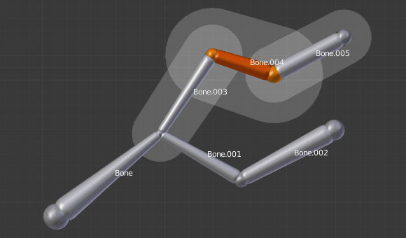

Transform¶
Transform¶

The Transform panel for armatures in Edit Mode.
We will not detail here the various transformations of bones, nor things like axis locking, pivot points, and so on, as they are common to most object editing, and already described here (note however, that some options, like snapping, do not seem to work, even though they are available...). The same goes for mirroring, as it is nearly the same as with mesh editing. Just keep in mind that bones’ roots and tips behave more or less like meshes’ vertices, and bones themselves act like edges in a mesh.
As you know, bones can have two types of relationships: They can be parented, and in addition connected. Parented bones behave in Edit Mode exactly as if they had no relations. They can be grabbed, rotated, scaled, etc. a parent bone without affecting its descendants. However, connected bones must always have parent’s tips connected to child’s roots, so by transforming a bone, you will affect all its connected parent/children/siblings.
Finally, you can edit in the Transform panel in the Properties region the positions and radius of both ends of the active selected bone, as well as its roll rotation.
Radius and Scaling in Envelope Visualization¶
Reference
SWhen bones are displayed using Octahedron, Stick or B-Bone visualizations, scaling will behave as expected, similar to scaling mesh objects. When bones are displayed using Envelope visualization, scaling will have a different effect: it will scale the radius of the selected bones’s ends. (see: skinning part). As you control only one value (the radius), there is no axis locking here. And as usual, with connected bones, you scale at the same time the radius of the parent’s tip and of the children’s roots.

A single selected bone... |

...Scaled in Octahedron visualization. |

A single selected bone... |

...Scaled in Envelope visualization. Its length remains the same, but its ends’ radius are bigger. |
Note that when you resize a bone (either by directly scaling it, or by moving one of its ends), Blender automatically adjusts the end-radii of its envelope proportionally to the size of the modification. Therefore, it is advisable to place all the bones first, and only then edit these properties.
ScaleB and Envelope¶
Reference
Ctrl-Alt-SCtrl-Alt-S activates a transform tool that is specific to armatures.
It has different behavior depending on the active visualization, as explained below:
In Envelope visualization, it allows you to edit the influence of the selected bones (their Distance property, see the skinning part) – as with the “standard” scaling with this visualization (see the previous section), this is an one-value property, so there is no axis locking and such.
|
A single bone selected in Envelope visualization. |

Its envelope scaled with |
{kind=link}
In the other visualizations, it allows you to edit the “bone size”. This seems to only have a visible effect in B-Bone visualization, but is available also with Octahedron and Stick ... This tool in this situation has another specific behavior: While with other transform tools, the “local axes” means the object’s axes, here they are the bone’s own axes (when you lock to a local axis, by pressing the relevant key twice, the constraint is applied along the selected bone’s local axis, not the armature object’s axis).

A single “default size” bone selected in B-Bone visualization. |

Its size scaled with |

The same armature in Object Mode and B-Bone visualization, with Bone.004’s size scaled up. |
Bone Roll¶
In Edit Mode, you can control of the bones roll (i.e. the rotation around the Y axis of the bone).
However, after editing the armature, or when using euler rotation, you may want to set the bone roll.
Set Bone Roll¶
Reference
Ctrl-RThis is a transform mode where you can edit the roll of all selected bones.
Recalculate Bone Roll¶
Reference
Ctrl-N- Axis Orientation
- Local Tangent
Align roll relative to the axis defined by the bone and its parent.
X, Z
- Global Axis
Align roll to global X, Y, Z axis.
X, Y, Z
- Active Bone
- Follow the rotation of the active bone.
- View Axis
- Set the roll to align with the view-port.
- Cursor
- Set the roll towards the 3D cursor.
- Flip Axis
- Reverse the axis direction.
- Shortest Rotation
- Avoids rolling the bone over 90 degrees from its current value.
Bone Direction¶
Reference
W-3This tool is not available from the Armature menu,
but only from the Specials pop-up menu W.
It allows you to switch the direction of the selected bones (i.e.
their root will become their tip, and vice versa).
Switching the direction of a bone will generally break the chain(s) it belongs to. However, if you switch a whole (part of a) chain, the switched bones will still be parented/connected, but in “reversed order”. See the Fig. Switching example..

An armature with one selected bone, and one selected chain of three bones, just before switching. |

The selected bones have been switched. Bone.005 is no more connected nor parented to anything. The chain of switched bones still exists, but reversed (Now Bone.002 is its root, and Bone is its tip). Bone.003 is now a free bone. |